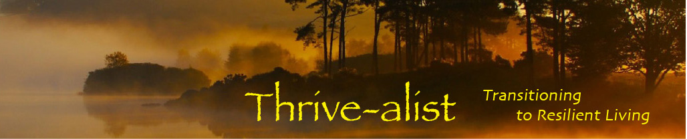

permaculture and land planning
thrivalist

the thrivalist community pages from the original sitebuilder site are gathered here. select a section below.


coherence legacy

permaculture and land planning

the thrivalist community pages from the original sitebuilder site are gathered here. select a section below.